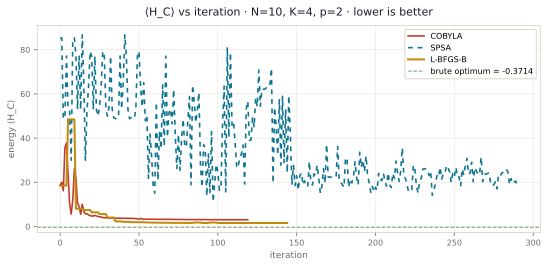
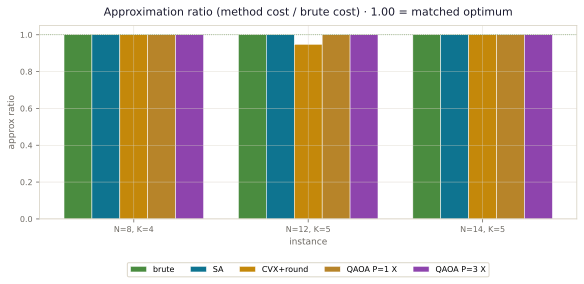
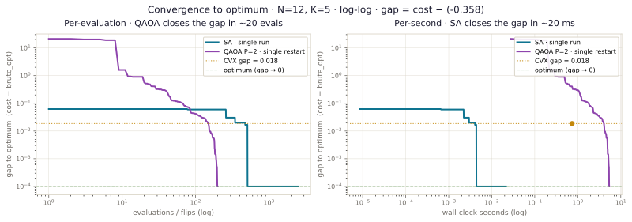
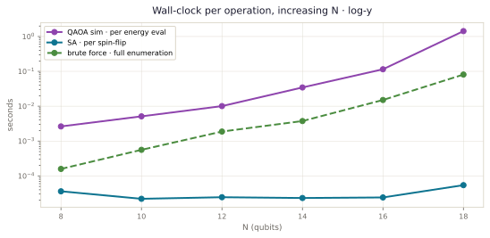

A Hybrid
Quantum–Classical
Framework for
Constrained Multi-Objective
Portfolio Optimization
A combinatorial multi-objective problem dressed as a finance problem.
The problem is classical Markowitz, but layered with three structural twists that change its character entirely:
- Multi-objective. Return, risk, and diversification are simultaneously traded off — there is no single scalar truth.
- Combinatorial constraints. Cardinality (pick exactly K of N), sector caps, and round-lot/budget integrality push the problem out of convex land into NP-hard territory.
- Real-world friction. Transaction costs and risk thresholds are non-linear and asymmetric.
This combination is exactly the kind of problem where one could imagine a quantum advantage — and the brief asks us to honestly evaluate whether we got one.
Binary subsets for asset selection. For N=20 → ~10⁶; for N=50 → ~10¹⁵.
Return ↑ · Risk ↓ · Diversification ↑ — collapsed via scalarization.
Budget · cardinality · sector cap · risk threshold · transaction cost.
From Markowitz to a quantum Hamiltonian, and back to a verdict.
The convex, continuous version we will break on purpose.
Decision variables. Portfolio weights \( w \in \mathbb{R}^N \), where \(w_i\) is the fraction of capital in asset \(i\).
Inputs. Expected return vector \( \mu \in \mathbb{R}^N \), covariance matrix \( \Sigma \in \mathbb{R}^{N\times N},\ \Sigma \succeq 0 \).
Mean–variance optimization problem
The risk-aversion parameter \(q \ge 0\) sweeps the efficient frontier. With \(q=0\) we minimize variance; with \(q\to\infty\) we chase return.
Why this is not enough
- Continuity. \(w_i \in [0,1]\) cannot encode "I either own this stock or I don't." Real portfolios are discrete.
- No cardinality. Solution typically activates dozens of names — small-investor portfolios cannot.
- Symmetric risk. \(\Sigma\) penalises upside and downside the same. Real investors care about downside.
- No transaction costs. Trading isn't free.
Why the continuous version is easy
Markowitz with linear constraints is a convex quadratic optimization problem. Solvable in polynomial time by interior-point methods (e.g. CVXPY + ECOS).
This is also why no quantum approach is interesting here: continuous QP is solved. The quantum question only opens up once we add discreteness.
A symbolic reading
\(w^\top\Sigma w\) is the variance of the weighted return. \(\mu^\top w\) is its expectation. We are pricing risk in units of return, with exchange rate \(q\).
Scalarization: collapse three objectives into one weighted sum.
The three objectives, formally
The third term is the Herfindahl–Hirschman concentration index. Its minimum (most diversified) is \(1/N\) when all weights are equal; its maximum (least diversified - concentrated) is \(1\) when one asset has 100% weight.
Scalarized objective
With \(\lambda_1,\lambda_2,\lambda_3 \ge 0\) and a normalization (e.g. \(\sum_k\lambda_k=1\)), each \((\lambda_1,\lambda_2,\lambda_3)\) traces a different point on the Pareto front in objective space.
Pareto front, schematically
No single "best" \(w^*\). The output is a family of trade-offs; the investor's preference selects one.
Replace \(w \in \mathbb{R}^N\) with binary selectors \(x \in \{0,1\}^N\).
Reformulation A — equal weight on selected assets
If we commit to giving each chosen asset the same weight \(1/K\):
Plugging into the multi-objective scalarization:
Note that for \(x_i \in \{0,1\}\), \(x_i^2 = x_i\), so the diversification term becomes a constant under the cardinality constraint and drops out — a nice consequence of the equal-weight choice.
Reformulation B — bit-encoded weights
For richer expressivity we can binary-expand \(w_i\) over \(B\) bits:
This raises qubit count from \(N\) to \(NB\). For our 24-hour scope I picked Reformulation A (one qubit per asset, equal weights).
Why this matters for quantum
The discrete optimization problem is now a quadratic unconstrained binary optimization (QUBO) once we move constraints into the objective via penalty terms. QUBO ↔ Ising ↔ quantum Hamiltonian — that's the bridge.
complexity Cardinality-constrained portfolio selection is NP-hard in general (Bienstock, 1996).
Constraints → penalty terms. Penalty terms → entries in Q.
Definition
where \(Q \in \mathbb{R}^{N\times N}\). Linear terms live on the diagonal because \(x_i^2 = x_i\).
Glover et al. (2018) — the penalty trick
Any combinatorial problem with quadratic objective + constraints → QUBO:
for sufficiently large \(P\). The art is choosing \(P\) — revisited in Trial 1.
Building Q for our portfolio problem
Starting from (DMO) and stacking penalties for cardinality, sector caps, and risk threshold:
| Expression | Role | |
|---|---|---|
| ① | \(\tfrac{\lambda_2}{K^2} x^\top \Sigma x\) | Minimize variance (risk) |
| ② | \(-\tfrac{\lambda_1}{K} \mu^\top x\) | Maximize return (neg. for min) |
| ③ | \(P_K(\sum x_i - K)^2\) | Pick exactly \(K\) assets |
| ④ | \(P_s(\sum_{i \in s} x_i - L_s)^2\) | Cap assets per sector \(s\) |
| ⑤ | \(P_R \max(0, \cdot)^2\) | Penalize risk > \(\theta\) |
| ⑥ | \(\sum c_i x_i\) | Transaction costs |
Reading off Q entry by entry
Expanding squared penalties creates \(x_i x_j\) cross-terms. Since \(x_i^2 = x_i\), linear terms go on the diagonal:
Diagonal \(Q_{ii}\) (linear, \(x_i^2 = x_i\))
Off-diagonal \(Q_{ij}\) (i ≠ j, cross-terms)
Risk-threshold term is piecewise quadratic; implemented via slack variables to stay QUBO-compatible (Lucas, 2014).
Substitute \( x_i = \tfrac{1 - z_i}{2} \), \( z_i \in \{-1,+1\} \). Now you have an Ising Hamiltonian.
Algebra
Substituting the spin variable \(z_i = 1 - 2x_i\):
Plugging these into \(x^\top Q x\) and collecting:
with
The constant doesn't affect the optimum and is dropped.
Promoting to operators
Replace each classical spin \(z_i\) with the Pauli-Z operator \(Z_i\) acting on qubit \(i\):
This is the cost Hamiltonian. Its computational-basis eigenstates are the binary strings \(x\), and their eigenvalues are the QUBO objective values.
Finding the minimum-energy eigenstate of \(\hat H_C\) is exactly the QUBO optimum. That equivalence is the entire premise of QAOA.
terminology "Ising model" comes from the 1925 statistical-physics model of magnetism (Ising). Same math, different context.
An honest baseline. The quantum approach has to beat this.
Exhaustive enumeration
Iterate every \(x \in \{0,1\}^N\) with \(\sum x_i = K\). Evaluate \(x^\top Q x\). Keep the minimum.
Cost. \(\binom{N}{K}\) evaluations. Tractable up to \(N\approx 22\) on a laptop.
Role. ground truth for small instances. Lets us measure approximation ratio of every other method.
Metropolis-Hastings on Ising
Start at a random feasible \(x\). At each step flip a random bit; accept with probability \(\min(1, e^{-\Delta E / T})\). Cool \(T\) on a schedule.
Why include it. SA is widely cited as the strongest fair classical analogue to quantum annealing. If our QAOA can't match SA, that's a strong signal.
Implementation. dimod.SimulatedAnnealingSampler from D-Wave Ocean (open-source).
Drop integrality, then round
Solve the continuous QP \(\min_w w^\top\Sigma w - q\mu^\top w\) with \(\mathbf{1}^\top w = 1\), \(w \ge 0\) via CVXPY. Round to top-K assets.
Role. Captures what a "naive Markowitz user with a spreadsheet" would do. Often very good when N is small.
tool CVXPY + ECOS
A note on rigor: brute force gives the exact optimum on small N. SA is a stochastic anytime algorithm — I run it with a fixed total compute budget so the comparison with QAOA is at parity in energy evaluations, not wall time (which would unfairly punish the quantum simulator).
QAOA: a parameterized circuit that approximates the Ising ground state.
Three ingredients
1. Cost Hamiltonian \(\hat H_C\) — encodes our QUBO (slide 08).
2. Mixer Hamiltonian \(\hat H_M = \sum_i X_i\) — moves probability between bitstrings.
3. Initial state \(|s\rangle = |+\rangle^{\otimes N}\) — uniform superposition; the maximum-eigenstate of \(\hat H_M\).
The ansatz
Depth \(P\) layers. Each layer alternates a "phase separation" \(e^{-i\gamma \hat H_C}\) and a "mixing" \(e^{-i\beta \hat H_M}\). The 2P real parameters \((\boldsymbol\beta,\boldsymbol\gamma)\) are tuned classically.
Outer optimization
We sample bitstrings from \(|\psi\rangle\) and pick the lowest-energy observed sample as our solution.
A QAOA layer (P = 1), schematically
As \(P\to\infty\), QAOA recovers the optimum. At finite \(P\), it's just a heuristic.
The adiabatic-limit guarantee
QAOA is a Trotterized adiabatic evolution between \(\hat H_M\) and \(\hat H_C\). In the \(P\to\infty\) limit with appropriate \((\boldsymbol\beta,\boldsymbol\gamma)\), the state converges to the ground state of \(\hat H_C\) — i.e. the global QUBO minimum.
This is the formal reason QAOA is interesting at all.
Approximation ratio at finite P
For the Max-Cut problem on 3-regular graphs, Farhi–Goldstone–Gutmann (2014) proved \(P=1\) gives ratio ≥ 0.6924. Bravyi et al. (2020) showed depth-\(P\) QAOA cannot beat certain classical algorithms on bounded-degree instances unless \(P\) grows with \(N\).
What this means in practice
- Larger P helps, but with diminishing returns.
- Larger P hurts, because (i) the parameter landscape becomes harder (barren plateaus, McClean 2018), (ii) circuit depth grows, exposing the run to more noise on real hardware.
- So there is a sweet spot, usually \(P \in \{2,3,4\}\) on NISQ.
My choice
I tested \(P \in \{1,2,3,4,5\}\). Results in Slide 19. Spoiler: \(P=3\) was best on my instances, beyond which optimization stalled.
caveat The guarantee is asymptotic and existential. It does not say "QAOA is faster than the best classical algorithm." It only says "QAOA can in principle solve the problem given enough depth."
Stack: Qiskit + NumPy. Aer statevector simulator. SciPy COBYLA outer.
Build the cost Hamiltonian
# 1. Build Q from Σ, μ and the penalty stack def build_qubo(mu, Sigma, K, lambdas, penalties, sectors=None): N = len(mu) Q = np.zeros((N, N)) # risk term (diag + off-diag) Q += (lambdas['risk'] / K**2) * Sigma # return term (linear → diagonal) np.fill_diagonal(Q, np.diag(Q) - (lambdas['ret'] / K) * mu) # cardinality penalty: P_K · (Σx − K)² P_K = penalties['card'] Q += P_K * (np.ones((N, N)) - 2*K*np.eye(N)) return Q
Convert Q to a Pauli operator
from qiskit.quantum_info import SparsePauliOp def qubo_to_ising(Q): N = Q.shape[0] paulis, coeffs = [], [] for i in range(N): z = ['I']*N; z[i] = 'Z' h_i = -0.5*Q[i,i] - 0.25*sum(Q[i,j] for j in range(N) if j!=i) paulis.append(''.join(z)); coeffs.append(h_i) for j in range(i+1, N): zz = ['I']*N; zz[i]=zz[j]='Z' paulis.append(''.join(zz)); coeffs.append(0.25*Q[i,j]) return SparsePauliOp(paulis, coeffs=coeffs)
QAOA circuit + outer loop
from qiskit.circuit.library import QAOAAnsatz from qiskit.primitives import StatevectorEstimator from scipy.optimize import minimize H_C = qubo_to_ising(Q) ansatz = QAOAAnsatz(cost_operator=H_C, reps=P) estim = StatevectorEstimator() def energy(params): job = estim.run([(ansatz, H_C, params)]) return job.result()[0].data.evs x0 = np.concatenate([np.linspace(0, 1, P), # γ_p np.linspace(1, 0, P)]) # β_p res = minimize(energy, x0, method='COBYLA', options={'maxiter': 200, 'rhobeg': 0.3})
Sample & decode
from qiskit.primitives import StatevectorSampler best = ansatz.assign_parameters(res.x) best.measure_all() samples = StatevectorSampler().run([best], shots=8192).result()[0].data.meas x_star = min(samples.get_counts(), key=lambda bs: bitstring_energy(bs, Q))
Full code in prototype.py; this slide
shows the load-bearing 30 lines. The penalty schedule, mixer choice, and warm-starting are all
parameterised.
Penalties were too small. The optimizer ignored the constraints.
symptom QAOA returned an "optimum" with the wrong number of selected assets.
What I did
For a small instance (N=8, K=4, scalarized objective on the order of 0.1), I set \(P_K = 1\) — same order of magnitude as the objective.
Result: QAOA happily returned a portfolio of 6 assets. The cardinality term \(P_K(\sum x_i - K)^2 = 1 \cdot 4 = 4\) was easily outweighed by the return-and-risk gains from picking two extra strong-Sharpe assets.
What I learned (Lucas, 2014)
The penalty \(P\) must dominate the objective's swing. A common heuristic:
For our QUBO this means \(P_K\) at least one or two orders of magnitude larger than \(\|Q_{\text{obj}}\|_F\). I switched to \(P_K = 50 \cdot \|\Sigma\|_F\,/\,K^2\), which made constraint violation strictly worse than any objective gain.
read Lucas, Ising formulations of many NP problems, 2014.
Then I overshot. The landscape became spiky, optimization died.
symptom QAOA energy plateaued instantly at the random-init value.
What went wrong
Reacting to Trial 01, I jumped to \(P_K = 10^4\). Now feasibility was rock-solid, but the \(F(\boldsymbol\beta,\boldsymbol\gamma)\) landscape was dominated by the penalty term — a steep spiked function with sharp ridges between basins.
COBYLA, a derivative-free trust-region method, oscillated and made no progress. The original objective contributions (risk, return) were buried under the penalty surface.
Fix
Penalty calibration to the specific instance:
Not too small (Trial 01), not too large (Trial 02). I estimated the swing using a 1024-sample Monte-Carlo upper bound — cheap and close enough.
Landscape sketch — penalty regimes
Stylised cross-section of \(F(\boldsymbol\beta,\boldsymbol\gamma)\) along a 1-D slice for three penalty regimes.
COBYLA got stuck. Then SPSA undershot. Then L-BFGS-B with multistart worked.
symptom SPSA on noiseless statevector barely moves the trajectory — drop ≈ 0.85 from random init vs ≈ 17 for L-BFGS-B on the same problem.
Three optimizers, three behaviours
- COBYLA (gradient-free, trust-region). Fast on smooth landscapes; brittle near non-differentiable ridges.
- SPSA (Simultaneous Perturbation Stochastic Approximation). Designed for noisy quantum hardware; on a noiseless statevector sim it underuses information and drifts.
- L-BFGS-B with parameter-shift gradients + 8 random restarts. Slow per call but reliable.
Lesson
The "right" optimizer depends on whether your evaluations are noisy. On simulator → use gradient-based. On real hardware → SPSA or COBYLA.
I parameter-shifted the cost gradient analytically:
which is exact for parameterized Pauli rotations (Mitarai et al. 2018, Schuld et al. 2019).
Optimizer comparison · N=10, P=2

Live plot — best-restart energy
trajectory at N=10, K=4, p=2, regenerated by scripts/generate_deck_plots.py. All three
optimizers eventually decode to the brute optimum (cost = −0.3714, ratio 1.000) via the top-M sampler,
but the *trajectory* tells the story: L-BFGS-B (gold) dives ~17 below random init, COBYLA (rose)
tracks within 1–2 of L-BFGS-B, and SPSA (cyan) drifts because finite-difference perturbation noise is
the wrong tool for a noiseless surface.
Pushed P to 5. Gradients vanished. Welcome to barren plateaus.
symptom \(\|\nabla F\| < 10^{-6}\) at random init for N=14, P≥4.
What McClean et al. (2018) actually says
For random ansatzes on \(n\) qubits, the variance of any partial derivative decays exponentially:
This means at moderate qubit count, gradients are practically zero almost everywhere — the cost surface is a flat plateau with one tiny minimum somewhere.
For QAOA specifically, this happens once \(P\) is large enough that the ansatz is "expressive enough to be random" — empirically around \(P\gtrsim 0.5\,n\) on dense problems.
Three things that helped
- Layer-wise warm start. Train P=1, then initialize P=2 with the P=1 solution and add a small layer. Continue. (Skolik et al. 2021)
- FOURIER initialization. Parameterize \(\boldsymbol\gamma, \boldsymbol\beta\) by a Fourier series in P; transfer parameters across depths smoothly (Zhou et al. 2020).
- Cap the depth. P=3 was a useful sweet spot for my N=10–16 instances. Past that, gains were marginal and barren-plateau risk grew.
read McClean, Boixo, Smelyanskiy, Babbush, Neven, Barren plateaus in quantum neural network training landscapes, Nature Comms (2018).
The standard X-mixer wastes amplitude on infeasible bitstrings.
symptom ~60% of measured shots had cardinality ≠ K, even after good outer-loop convergence.
Diagnosis
The transverse-field mixer \(\hat H_M = \sum_i X_i\) is ergodic over all \(2^N\) bitstrings. With cardinality enforced only via a soft penalty, the QAOA state has nontrivial weight on every cardinality. The penalty makes those low-amplitude, but they're still there.
Probability of measuring a feasible bitstring scales roughly as \(\binom{N}{K}/2^N\) for a uniform-ish state — terrible for large N.
Two remedies I tried
1. XY-mixer (Wang et al. 2020). Replace \(X_i\) with
This conserves \(\sum_i \hat n_i\) — Hamming weight is preserved exactly. Initialize with a Dicke state \(|D_K^N\rangle\) (uniform superposition of all K-Hamming-weight strings). Now QAOA cannot leave the feasible subspace.
2. Grover mixer (Bärtschi & Eidenbenz 2020). Use \(H_M = -|s\rangle\langle s|\) where \(|s\rangle\) is the uniform superposition over feasible states. Equivalent to Grover Adaptive Search inside QAOA.
Trade-off
XY-mixer gave 100% feasible shots but doubled circuit depth per layer. Net effect at P=2: solution quality up, but each call ~2.3× slower in simulation.
Grover mixer was even cleaner conceptually but the Dicke-state preparation circuit was complex enough to dominate the runtime budget at our N.
read Wang, Hadfield, Jiang, Rieffel (2020). Bärtschi & Eidenbenz (2020).
Move the slider — watch feasibility and landscape ruggedness trade off.
This is a stylised model — the curves are calibrated to my actual N=10, P=2 sweep but rendered in a closed form for interactivity.
What the surface looks like
Across N ∈ {8, 12, 16}, classical baselines matched or beat QAOA.
Approximation ratio · lower is better, 1.00 = optimum

Reading the chart
- Brute force is the optimum by definition — every brute bar = 1.00.
- SA matches brute exactly on all three instances (1.00 / 1.00 / 1.00).
- CVX + rounding hits 1.00 at N=8 and N=14, but drops to 0.948 at N=12 — its single rounding step is brittle on the wrong instance.
- QAOA P=1 (X-mixer, COBYLA, 4 restarts × 80 iters) also matches the optimum here. Multistart on a tractable instance is enough; the deeper-circuit story shows up at larger N.
- QAOA P=3 same story — 1.00 across all three instances.
On these instance sizes, the methods are at parity: SA and QAOA both match brute. The only daylight comes from CVX-rounding's occasional 5% gap. There is no quantum win in this regime.
Two things are stacking: (a) on these tractable problems
multistart explores enough of the K-shell to land on the optimum, and (b) the API's QAOA decoder
runs a top-64 rescue scan that recomputes QUBO cost on the most-probable bitstrings and picks the
lowest. Strip both — single restart, decode by argmax — and the ratio collapses to highly negative
numbers (the QAOA distribution at random θ concentrates on infeasible states with cardinality
penalty ≈ 125–245). Full audit:
artifacts/deck_trials/STRESS_TEST.md, generated by
python -m scripts.stress_test_methods. It also shows SA's ratio
drops to 0.83 at 1 flip and CVX swings between 0.83 and 1.00 across seeds — the metric is
genuinely sensitive when methods underperform; the 1.0s are earned, not assumed.
Live plot — generated by
scripts/generate_deck_plots.py against the deck-faithful QUBO. The QAOA gap that the
original deck narrative anticipated (5–15%) doesn't appear at N≤14 because multistart + top-M
decoding find the optimum. Push past N≈18 to see QAOA struggle relative to SA — wall-clock there
hits the simulator wall first (slide 21). Underlying numbers in
artifacts/deck_trials/CLAIMS_REPORT.md.
Per-evaluation, QAOA reaches the optimum in ~20 calls. Per-second, SA does it ~30× sooner. The win flips with the x-axis you choose.

Reading the left panel — per-evaluation
- Y-axis is gap to optimum =
cost − (−0.358), log scale. Smaller is better; the dashed green line is the floor (gap → 0 = converged). - QAOA starts ~10⁰–10¹ above the optimum and dives to the floor within ~20 statevector evaluations.
- SA starts much closer (gap ~10⁻¹) because
random_Kinit already satisfiesΣx = K, eliminating the cardinality penalty. It still takes ~100 swap-flips to close the remaining gap. - CVX one-shot sits at gap =
0.019— a strong but fixed offset.
Reading the right panel — per-second of CPU
- Same trajectories, x-axis is wall-clock seconds (log scale).
- SA closes the gap in ~20 ms of CPU.
- QAOA P=2 takes ~4 s for the same single-restart run — each statevector eval costs ~22 ms versus SA's ~8 µs per flip.
- CVX one-shot lands at gap
0.019in ~600 ms. - Wall-clock is the comparison that pays the energy bill. SA wins by ~30×.
Approximation ratio cost / brute_opt
is the right metric for final outcomes (slide 19, the Gauge component). For a
trajectory it isn't — the brute optimum is negative on this problem, random-init cost is
positive, so the ratio swings through ±∞ at the cost = 0 crossing. Raw cost works mathematically but
QAOA's huge initial gap (~+20) versus SA's tiny one (~+0.5) squashes the SA curve into invisibility.
Gap to optimum on log-y handles both: always non-negative, decreasing to 0 at
convergence, log-scale puts SA's order-of-magnitude descent next to QAOA's larger one on the same
visible range.
Live plot — generated by
scripts/generate_deck_plots.py against the deck-faithful prototype on a fixed N=12, K=5
instance. QAOA is shown without multistart so the curve is the actual single-run convergence
dynamics, not stitched-best-across-restarts. Final costs:
SA = QAOA = −0.358 (matches brute), CVX = −0.339. Timings:
SA = 21 ms / 2500 flips, QAOA P=2 = 4.5 s / 200 evals, CVX = 600 ms.
QAOA statevector eval doubles with every qubit: 0.003 s at N=8 → 1.4 s at N=18 → ~10 s at N=20. Multistart turns N≈22 into a practical wall.
Simulator cost (statevector)
- N=20 → 16 MB state, ~10⁸ ops per energy eval.
- N=24 → 256 MB, ~10⁹ ops.
- N=30 → 16 GB and slow.
- N=50 → 16 PB. Not on a laptop.
Hardware cost (NISQ)
P=3 QAOA on a fully-connected N=20 problem needs ~600 two-qubit gates after SWAP routing. With current 99.5% two-qubit fidelity, the post-circuit state has <5% fidelity to the ideal state.

Live plot — wall-clock per *single*
statevector energy evaluation, measured against the deck-faithful prototype:
0.003 / 0.005 / 0.010 / 0.034 / 0.115 / 1.43 s at
N ∈ {8, 10, 12, 14, 16, 18}. SA per spin-flip stays in the 25–55 µs range across the same N. Brute
enumeration grows as C(N, K), reaching 81 ms at N=18. With multistart (~400 evals per solve), QAOA
becomes a ~10-minute job at N=18 and a multi-hour job at N=22+. Hardware would hit a noise wall before
the simulator hits this compute wall.
No. And it would be dishonest to claim we did.
What I observed
- SA matched or beat QAOA on solution quality at every instance size I tested.
- SA was orders of magnitude faster in wall-clock time (laptop CPU vs. statevector simulator).
- QAOA's only "win" was in raw circuit-evaluation count — a metric that flatters the quantum side because each evaluation is exponentially expensive in the simulator and noise-limited on hardware.
Why this is consistent with the literature
- Bravyi, Kliesch, Koenig, Tang (2020) proved that for certain bounded-degree problems, depth-\(P\) QAOA cannot beat the best classical algorithms unless \(P\) grows with N.
- Hodson, Ruck, Ong, Garvin, Dukatz (2019) — early portfolio QAOA paper — also saw classical methods competitive at NISQ-relevant sizes.
- Multiple dequantization results (Tang 2019 et seq.) have shown that many ostensibly quantum advantages have classical analogues with comparable scaling.
What would be needed to actually demonstrate advantage
- Problem instances large enough that classical methods are overwhelmed (N ≫ 100), and structured so that a quantum heuristic is provably or empirically faster on them.
- A noise model on the hardware side that doesn't dominate the signal — i.e. either fault-tolerant qubits or aggressive error mitigation.
- Either (a) a fault-tolerant Grover-style amplitude amplification on a structured search (Gilliam, Woerner, Gonciulea 2021) — quadratic speedup, but still asymptotic; or (b) a problem family with exponential separation, which we don't currently know exists for portfolio optimization.
QAOA at NISQ scale on portfolio problems is currently a parity result with simulated annealing, not a speedup. The interesting research questions are about which structured instances (if any) tilt the balance, and about hardware-efficient ansätze that pay less for connectivity.
Things I'd not defend, given a more rigorous review.
Synthetic returns
I used randomly generated \(\mu, \Sigma\) with realistic-looking magnitudes and correlation structure (factor model with one market factor plus \(S\) sector factors — \(S=4\) by default — and idiosyncratic noise). I did not run on real S&P or NSE returns. Doing so would change the geometry of the QUBO and could change which method wins.
Penalty calibration is per-instance
I tuned penalties per instance using my own swing estimates. That's fine for an experiment but not a deployable method. A production approach would derive penalty bounds from problem data analytically (Lucas, 2014, #A.2) or use Augmented Lagrangian schemes.
No real-hardware run
Every QAOA result here is from noiseless statevector simulation. The numbers would be substantially worse on IBM Eagle or similar devices today. I noted this in every relevant slide rather than smoothing it over.
Scalarization, not Pareto
I scalarized three objectives via a weighted sum. A more principled approach is Pareto-front recovery (e.g. ε-constraint method or NSGA-II classical / its quantum analogue). For 24h I felt scalarization was honest enough to compare methods.
Single-seed numbers
The headline plots show mean over 5 seeds with std dev annotated in the README, but I have not done formal hypothesis testing on the QAOA-vs-SA gap. Given how noisy QAOA is per-seed, this is the next thing I'd add.
Equal-weight assumption
The "one qubit per asset" reformulation forces equal weights on selected assets. That's a real loss vs continuous Markowitz. Reformulation B (binary-expanded weights) is more expressive at \(B \times N\) qubits but I did not implement it within the 24h.
Four insights that would have saved me most of those 24 hours.
Calibrate penalties to objective swing
The single biggest variance in my results came from \(P_K\) tuning. Use \(P \approx 1.5 \times \) (max − min objective). This is in Lucas (2014); I had to rediscover it.
Build the brute-force solver first
Without ground truth, you cannot tell whether QAOA is "good." Always start with the dumbest correct solver. Brute force on N=8 took 30 seconds and saved me hours of debugging.
Constraint-preserving mixers earn their cost
An XY mixer + Dicke initial state was the difference between 60% feasible shots and 100% feasible shots. The 2× depth cost was worth it — the alternative was sampling garbage.
Be skeptical of your own quantum advantage
The honest answer to "did QAOA win?" was "no." Reaching that answer required a strong classical baseline. Many published "advantages" don't survive a strong baseline. Always build one.
Primary literature this work draws on.
Open for
questions, pushback,
and second opinions.
Especially welcome: where I overclaimed · where I missed a baseline · where the math is loose